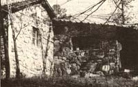

This view of the west side (if the remodeled Dycus cabin quite dramatically shows the exceptional use that the Dycus family has made, of the native stone in their corner of northern Georgia. The original cottage has been faced with the material... as were both the east and the west sides of the greenhouse/spare room the family added to the cabin. The stone walls on the original cottage and the sides of the greenhouse are all about 12 inches thick. The inside surfaces of the greenhouse walls are covered with three and one-half inches of insulation ... which has been covered, in turn, with recycled brick salvaged from some old burned-out buildings. Note that the south wall of the added-on greenhouse (the wall away from the main house) is not faced with stone. Instead, it's six inches thick ... filled with insulation ... and covered with wooden siding.